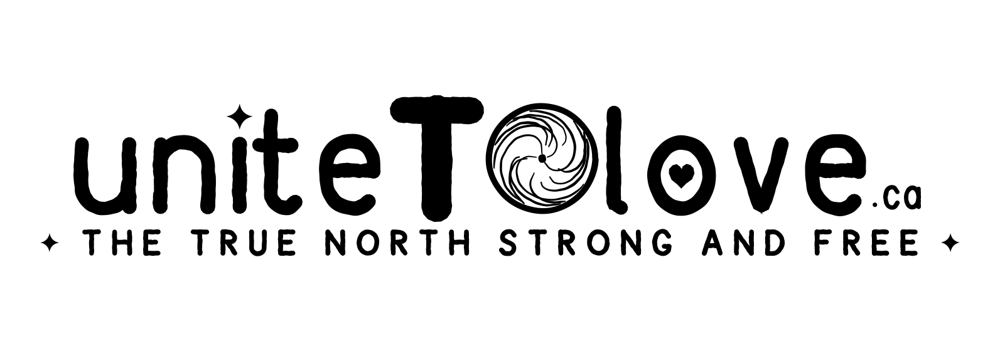

pronounced “unite T–O love”
→ Join the conversation (30 seconds)
If not Toronto, then where?
Unite Toronto behind becoming the world’s most abundant, regenerative city — a city of enough, for everyone, forever — leading Ontario and the world.
The way there is not a new movement. Toronto doesn’t need one. It needs the movements it already has — hundreds of them, strong and unhappy and ready — organized, coordinated, talking, and working together. What follows is one citizen’s synthesis of thousands of conversations, offered with the homework already done, to trigger exactly that.
One line underneath all of it: we overcome fear with love — through seeking understanding and doing together. Fear is what we feel toward what we do not yet understand. So the work is understanding — between neighbours, between the city and its own future — and the answer to almost every problem, followed far enough down, turns out to be love with receipts.
This is not an organization. There is nothing to join, no staff, no membership, no dues. This begins as one person and a set of ideas, published behind a library of verified civic information that anyone can check — read how we verify what’s here.
One link, everywhere: uniteTOlove.ca. Not ten different sign-up forms, not a dozen group chats that never meet each other — one door. Thirty seconds: your name and a way to reach you. That’s the whole first ask.
The welcome count
Toronto: — · GTA: — · World: —
This is where the running count of everyone who has joined the conversation will appear — Toronto’s own number leading, then the GTA, then the world — the moment sign-up exists. No count is published until it is real. Nothing is collected here today; this box is a promise of the shape the page will take, not a working sign-up.
Anyone can join this conversation, not only voters: residents who can’t yet vote, permanent residents, international students, the diaspora anywhere on earth. The ballot is one door into it, not the definition of it.
Read the full case — the mirror this city needs to look into, the infrastructure it already has, and the proposal on the table — on the vision page. Nothing on this page is the whole of it; this is the door.